Чешский художник, 1860–1939
Цель моих произведений — не разрушать, а возводить мосты, так как мы все должны питать надежду, что люди сблизятся друг с другом. И это сближение будет происходить тем быстрее и проще, чем больше люди узнают друг о друге
Плакаты, иллюстрации и украшения в стиле модерн. Плавные линии, цветы и узоры.
Смотреть работы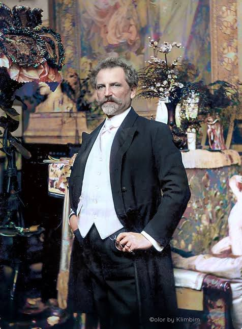
Избранные работы
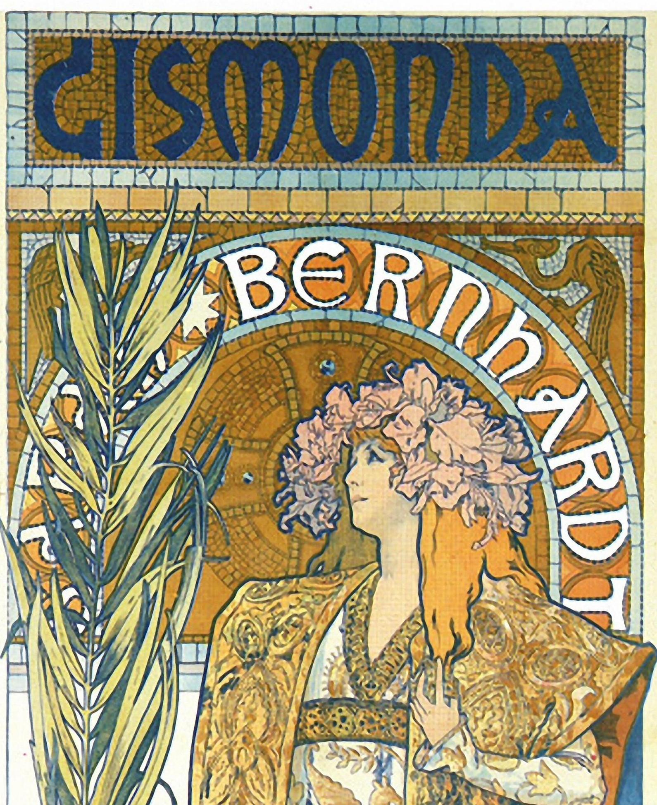
Жисмонда
Театральная афиша, 1894
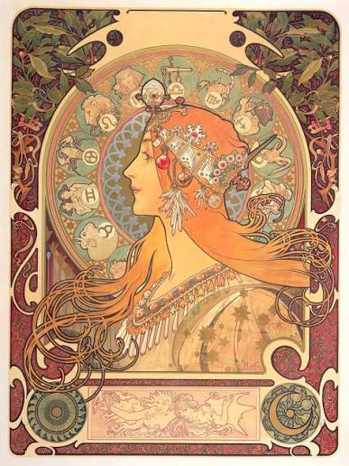
Зодиак
Календарь, 1896
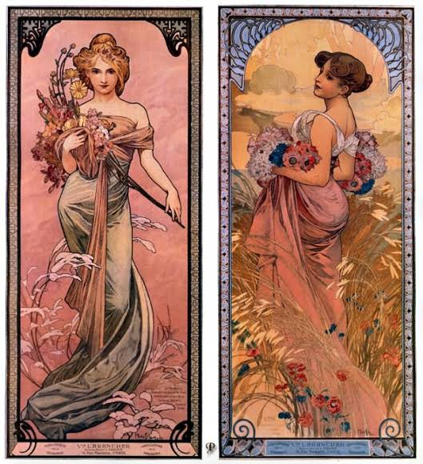
Времена года
Серия панно, 1896
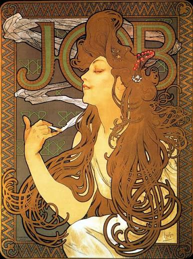
Job
Рекламный плакат, 1896
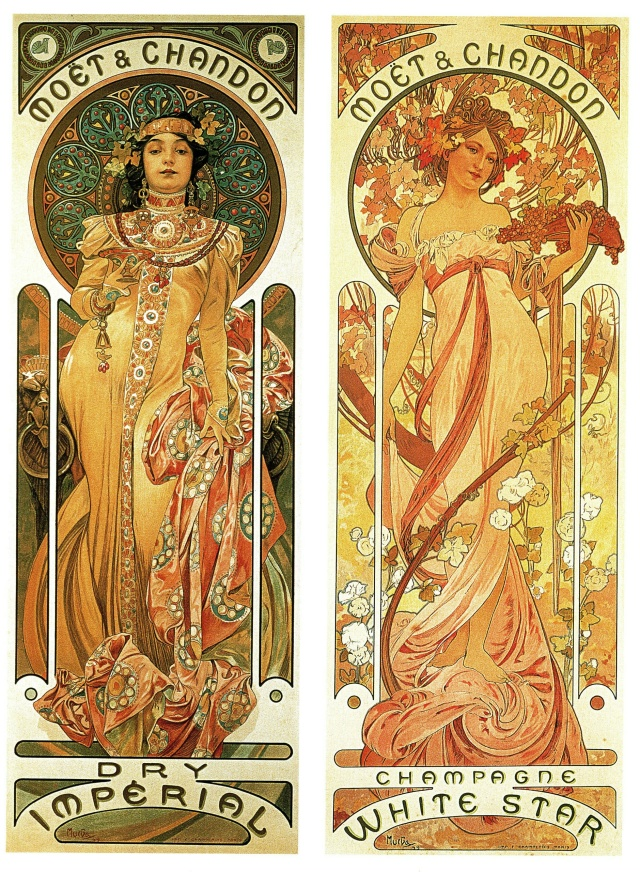
Moët & Chandon
Рекламный плакат, 1899
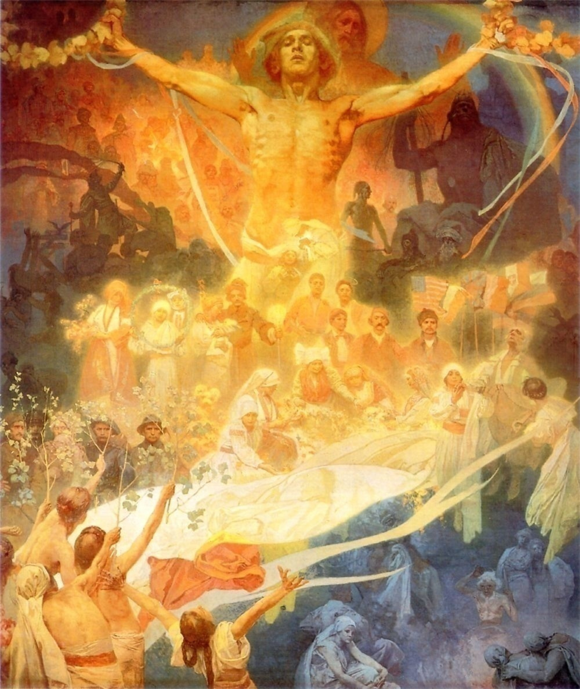
Славянская эпопея
Цикл из 20 картин, 1910–1928
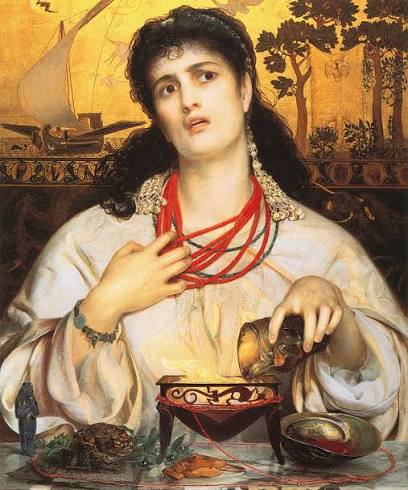
Медея
Афиша для Сары Бернар, 1898
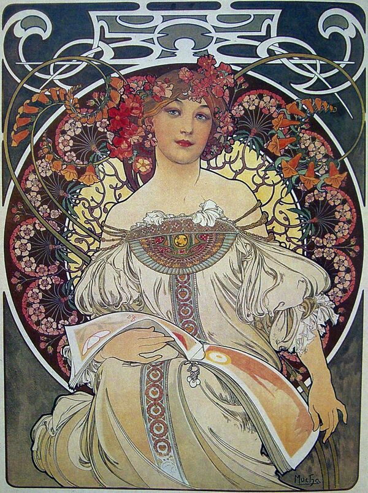
Мечтательность
1897
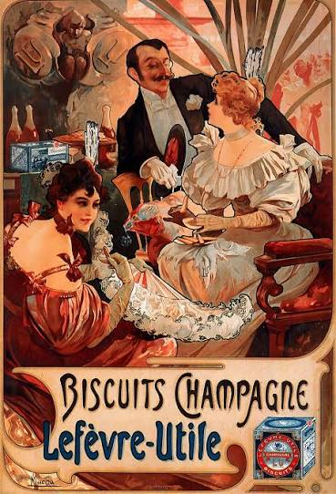
Лефевр-Утиль
Реклама печенья, 1896
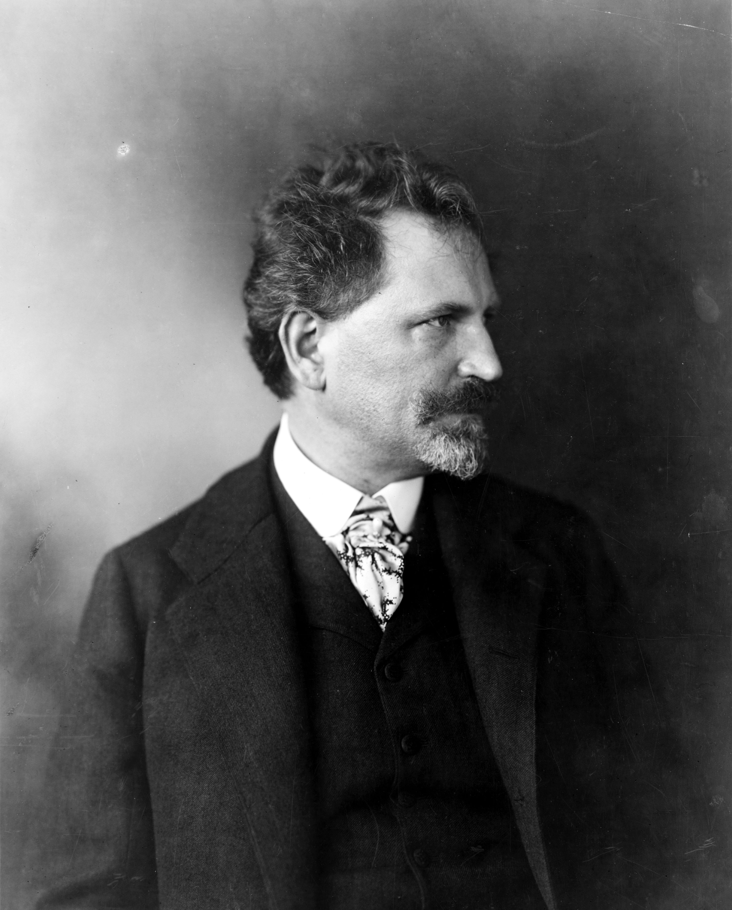
Обо мне
Меня зовут Альфонс Муха. Я родился в 1860 году в городе Иванчице (Чехия). В детстве я пел в церковном хоре в городе Брно и очень любил рисовать.
Учился живописи в Мюнхене, а в 1887 году переехал в Париж и продолжил учёбу в художественных школах. Денег часто не хватало, поэтому я подрабатывал иллюстрациями для книг и журналов.
В 1894 году я нарисовал афишу для актрисы Сары Бернар. Она всем понравилась, и после неё я стал известен. Сара заключила со мной договор на шесть лет: я делал для её театра афиши, костюмы и декорации. Так появился стиль, который назвали «стилем Муха» — это один из главных образов модерна.
Потом я рисовал рекламу, календари, упаковку и украшения. В 1904 году я поехал в США, где преподавал живопись и нашёл богатого мецената Чарлза Крейна.
Позже я вернулся на родину и 18 лет работал над «Славянской эпопеей», историей славянских народов в картинах. Эти 20 больших картин я подарил городу Праге. В 1918 году, когда появилась Чехословакия, я нарисовал для неё первые почтовые марки и банкноты. Я умер в Праге в 1939 году.
- Плакаты
- Иллюстрация
- Ювелирный дизайн
- Живопись
Контакты
Я жил очень давно, поэтому писать мне письма не надо. Но увидеть мои работы и места, где я жил, можно сегодня.
Город
Прага, Чехия
Где я работал
Париж, Нью-Йорк, Прага
Мой музей
Музей Альфонса Мухи, Прага, улица Панска, 7
Где похоронен
Вышеградское кладбище, Прага